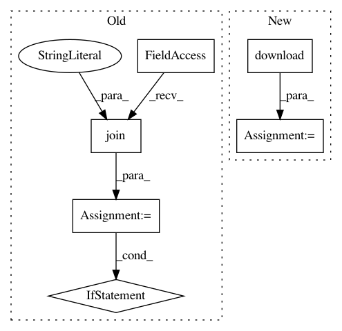

d4e3b1c76360bcf72cbae541834f8cd38f5449ee,parlai/tasks/light_dialog/build.py,,build,#Any#,12
Before Change
def build(opt):
version = "v2.01"
// download pickled database
dpath = os.path.join(opt["datapath"], "light_dialogue")
if not build_data.built(dpath, version):
print("[building data: " + dpath + "]")
if build_data.built(dpath):
// An older version exists, so remove these outdated files.
build_data.remove_dir(dpath)
build_data.make_dir(dpath)
// Download the data.
url = ("https://dl.fbaipublicfiles.com/parlai/light/" +
"light-dialog-processed-small7.pkl")
fname = "light_data.pkl"
build_data.download(url, dpath, fname)
// Download the unseen data.
url = "https://dl.fbaipublicfiles.com/parlai/light/light-unseen-processed2.pkl"
fname = "light_unseen_data.pkl"
build_data.download(url, dpath, fname)
// Mark the data as built.
build_data.mark_done(dpath, version)
// create particular instance of dataset depending on flags..
fields = [
"setting",
"objects",
"person_names",
After Change
def build(opt):
dpath, version = download(opt)
// create particular instance of dataset depending on flags..
fields = [
"setting",
In pattern: SUPERPATTERN
Frequency: 3
Non-data size: 6
Instances
Project Name: facebookresearch/ParlAI
Commit Name: d4e3b1c76360bcf72cbae541834f8cd38f5449ee
Time: 2019-03-21
Author: jju@fb.com
File Name: parlai/tasks/light_dialog/build.py
Class Name:
Method Name: build
Project Name: wandb/client
Commit Name: 5535b861bc9ca33dc06f92a143694040d837f3de
Time: 2020-11-16
Author: tim.s.sweeney@gmail.com
File Name: wandb/sdk_py27/wandb_artifacts.py
Class Name: WBArtifactHandler
Method Name: load_path
Project Name: wandb/client
Commit Name: 5535b861bc9ca33dc06f92a143694040d837f3de
Time: 2020-11-16
Author: tim.s.sweeney@gmail.com
File Name: wandb/sdk/wandb_artifacts.py
Class Name: WBArtifactHandler
Method Name: load_path